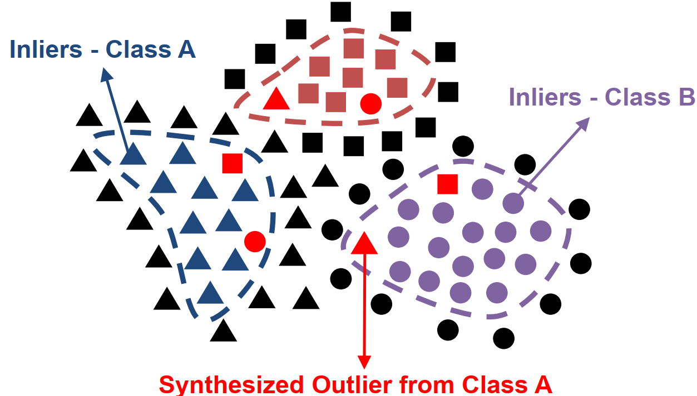

Welcome
I have been involved as a reviewer for: IEEE Sensors and MICCAI.
Publications
-

Normalizing Flow based Feature Synthesis for Outlier-Aware Object Detection
Nishant Kumar*, Siniša Šegvić, Abouzar Eslami, Stefan Gumhold
CVPR 2023 Highlight
[arXiv] [Code]
CV
-
 PhD in Advanced Artificial Intelligence
PhD in Advanced Artificial Intelligence
July 2019 - July 2024
Chair of Computer Graphics and Visualization, TU Dresden, Germany
-
Scientific Research Assistant
June 2018 - July 2024
Chair of Computer Graphics and Visualization, TU Dresden, Germany
-
 Student Research Assistant
Student Research Assistant
May 2016 - May 2017
Fraunhofer IIS, Dresden, Germany
-
Master's in Nanoelectronic Systems
October 2015 - April 2018
Faculty of Electrical and Computer Engineering, TU Dresden, Germany
-
 Data Engineer
Data Engineer
October 2013 - September 2015
HCL Technologies, Chennai, India
-
 Software Engineer
Software Engineer
August 2012 - September 2013
Samsung India Electronics, Noida, India
-
 Bachelor's in Electronics and Communication
Bachelor's in Electronics and Communication
2008 - 2012
Dr MGR Educational and Research Institute, Chennai, India
-
 Higher Secondary School
Higher Secondary School
2008
Somerville School, Greater Noida, India
Awards
-
 Secured 100,000 &euro Research Funding
Secured 100,000 &euro Research Funding
2021
Federal Ministry of Education and Research (BMBF), Germany
-
Gold Medallist and University Topper (Bachelor Studies)
2012
Dr. MGR Educational and Research Institute, Chennai, India
-
 CV Raman Academic Medal
CV Raman Academic Medal
2012
Institute of Engineering and Technology (IET), India/UK
-
All India Rank Holder in National IT Aptitude Test
2012
National Institute of Information Technology (NIIT), India
-
Rank 1 in Mathematics (High School)
2006
Somerville School, Greater Noida, India
Teaching
I organized the following courses during my PhD studies at TU Dresden:- Complex Lab (Winter Semester 2018/19) The task was the development of an Augmented Reality application to visualize the interior of real-world objects. I supervised five Master's students for this coursework.
- Complex Lab (Summer Semester 2020) The task was to develop a Virtual Reality application for immersive visualization of the human brain using Tractography data. I supervised around eight Master's and Bachelor's students for this coursework.
- Advanced Seminar (Summer Semester 2023) The seminar dealt with Recent Trends in Generative AI, where students performed an extensive literature study of popular Generative AI approaches. I directly supervised six students and managed the complete coursework during the semester.
- Advanced Seminar in the Summer Semesters of 2018, 2019, 2020, 2022, and 2023.
- Advanced Seminar in the Winter Semester of 2019
- Six Master's theses
- Three Bachelor's theses
- Four Research Projects